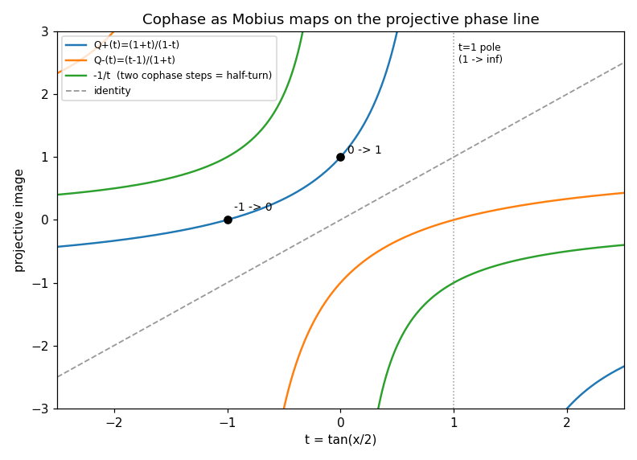
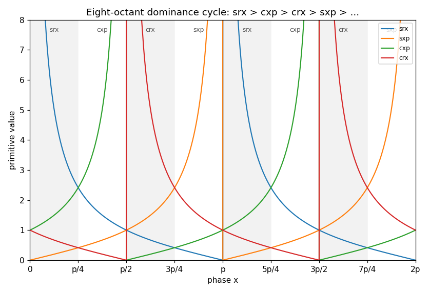
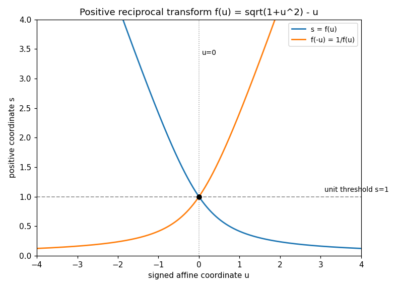
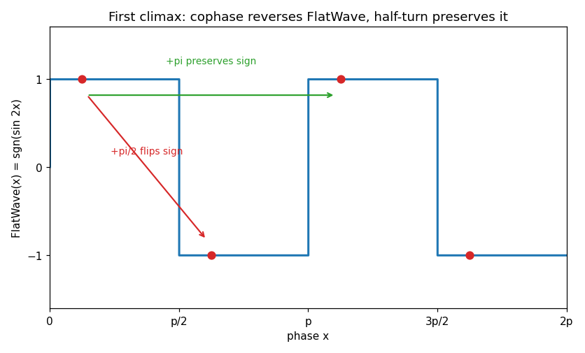
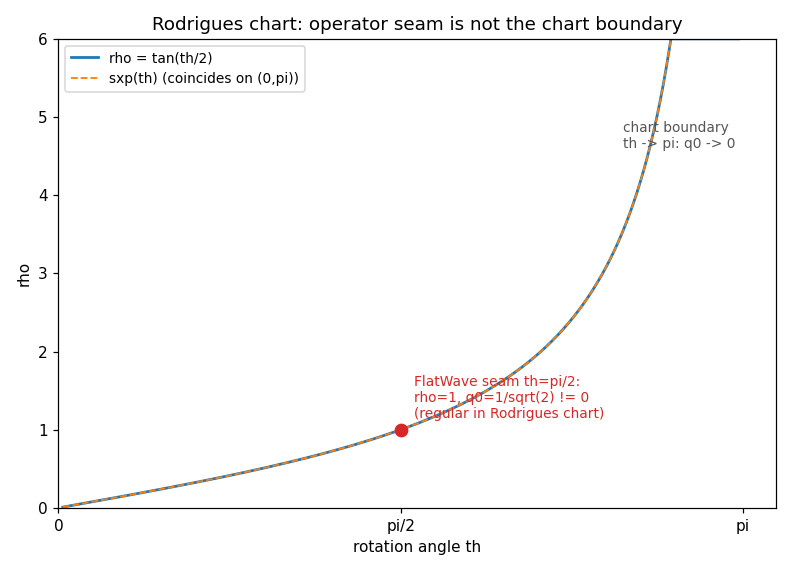
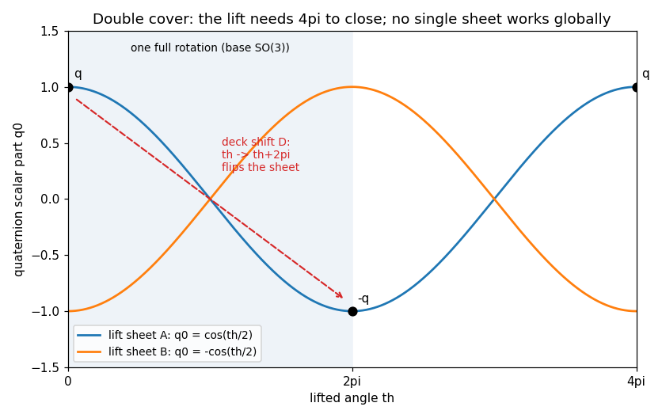
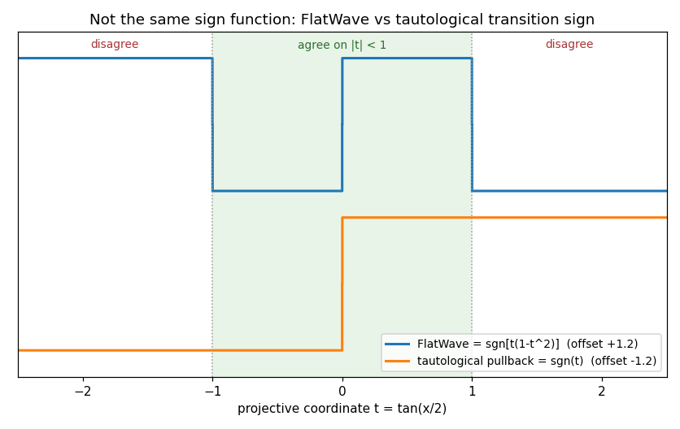

A restructured rewrite of Book 3 of R Theory — Volume I. Pictures and intuition first; the formal audit second. Every claim carries exactly one scope label: checked proof proof read and following from stated antecedents, completed symbolic check, completed numerical check, standard imported theorem, manuscript assertion, assumption or axiom (includes definitions and constitutional rules), incorrect result, incomplete or failed computation.
Contents. I. See it first · II. Then earn it · III. What is established, and what is not · IV. Close the book
Seven pictures. Each one draws a proved statement of Book 3 before the audit earns it. The graphs below are live Desmos calculators (drag to pan, scroll to zoom); if Desmos cannot load, a static rendering appears instead. Sampled-point agreement (worst-case residual 3.7e-13 across the plotted-identity checks in validation/book3/verify_book3.py) for a plotted identity is a completed numerical check, never a proof — the captions say which is which.







The formal audit, section by section, condensed. Notation: 𝕋2π = ℝ/2πℤ, 𝕋π = ℝ/πℤ, κ the fold, τa(x) = x+a, η = τπ/4, Oj = (jπ/4,(j+1)π/4), t = tan(x/2), Q+(t) = (1+t)/(1−t), f(u) = √(1+u²)−u, FlatWave(x) = sgn(sin 2x).
Cophase is the symmetric adjacency Δx ≡ ±π/2 (mod 2π) on 𝕋2π assumption or axiom (definition) — not equal phase, half-turn, antipode, reciprocal, or spin-cover partner. It exchanges sine and cosine channels up to sign checked proof; every phase has two distinct cophase neighbors checked proof; the directed quarter-turn has exact order 4 with τπ/2² = τπ checked proof; the relation is symmetric and irreflexive but not transitive — not an equivalence relation checked proof. After the fold κ the two directions induce one involution of order 2 on 𝕋π checked proof — carrier-dependent order, not a contradiction. Oriented frames split into two determinant-sign classes independent of the reference basis checked proof; "mirror frame" means the negative class relative to a declared orientation assumption or axiom (definition). Cophase translations preserve the phase circle's orientation checked proof, and the Cophase–Mirror Separation Theorem checked proof says the two structures are mathematically independent under the present declarations — no map between phase points and orientation-bearing frames has been declared. The prohibited-substitutions list (x ↦ x±π/2, x ↦ −x, s ↦ 1/s, q ↦ −q, … may not be called "mirror" by notation) is a terminological stipulation manuscript assertion. Zero axioms, zero imports.
η = τπ/4 has order 8 with a faithful C8 positional action on the octants checked proof; cophase advances ±2 octants, the half-turn 4 checked proof. Primitive π-periodicity (certified Book 2 inheritance manuscript assertion) identifies Oj with Oj+4 at the primitive-value level — four primitive classes from eight positional octants checked proof. The dominance cycle srx → cxp → crx → sxp is proved octant by octant checked proof; the exact cophase permutation is Pc = (srx crx)(sxp cxp) checked proof; the winner-label cycle Cdom has order 4 with Cdom² = Pc checked proof. Tie points at odd multiples of π/4 lie in D; seam points at kπ/2 are excluded — different analytic status checked proof. One eighth-turn is not generally an exact primitive symmetry (equality only at x = π/8 on O0) checked proof. The three-level quotient theorem keeps positional octants, primitive-value classes, and function labels as three distinct objects checked proof. Dominance is not dynamics; cophase is not one-octant advance checked proof.
t = tan(x/2) is a bijection 𝕋2π → ℝ̂ = ℝ ∪ {∞} checked proof — the signed coordinate retains the half-turn information the positive primitives erase. Directed cophase is exactly Q± checked proof; the two directions are inverse projective maps checked proof; Q+²(t) = −1/t (two proofs) and Q+ has exact order 4 in PGL(2,ℝ) checked proof. The marked orbit 0 → 1 → ∞ → −1 → 0 is the four cardinal phases checked proof; the ordered quadruple (0,∞;1,−1) is harmonic with cross-ratio −1 (ordering matters) checked proof. Scalar reflection R(t) = −t conjugates Q+ to Q− checked proof; det A+ = +2 vs det R = −1 separates orientation-preserving cophase from orientation-reversing reflection on RP¹ checked proof — reflection is still not automatically a mirror frame manuscript assertion (clarification). Infinity is a chart value, not a physical singularity; the harmonic −1 selects no chirality checked proof. The manuscript's "Wolfram independently verified" note is a claimed completed symbolic check I did not witness manuscript assertion.
f(u) = √(1+u²) − u is strictly positive, strictly decreasing, and a bijection ℝ → (0,∞) with exact inverse u = (1−s²)/(2s) checked proof; f(−u)f(u) = 1 turns signed reflection into reciprocal inversion checked proof — an algebraic coordinate involution, not a mirror operation checked proof. The unit threshold sgn(u) = sgn(1−s²) recovers the discarded sign relationally checked proof. Hyperbolic linearization f(u) = e−arsinh u checked proof (no relativistic content — stated explicitly manuscript assertion). All four canonical primitives are one map: sxp = f(cot x), srx = f(−cot x), crx = f(tan x), cxp = f(−tan x) checked proof, with logarithmic coordinates arsinh(cot x) = ln srx = −ln sxp checked proof. The four FlatWave threshold formulas (sgn(1−sxp²) = sgn(srx²−1) = …) are recovered checked proof. Unequal limits at ±∞ forbid a single-valued global RP¹ coordinate checked proof.
Γc = ⟨τπ/2⟩ ≅ C4 preserves D checked proof. FlatWave reverses under ±π/2 and is preserved under +π checked proof; the orbit is ε → −ε → ε → −ε → ε checked proof. χc(τkπ/2) = (−1)k is a homomorphism with FlatWave(g·x) = χc(g)FlatWave(x) checked proof; its kernel is {id, τπ} and it factors through C4/{0,2} ≅ C2 checked proof. Octant form: FlatWave|_{Oj} = (−1)⌊j/2⌋ checked proof; dominance and FlatWave are different quotients checked proof. In the projective coordinate, FlatWave = sgn[t(1−t²)] checked proof; cophase reverses and the half-turn preserves the projective sign polynomial checked proof. Deliberately narrow: no bundle, orientation, mirror, spin, or chirality inference is drawn here manuscript assertion (scope declaration).
RP² as homogeneous triples modulo scaling with the affine cover UX, UY, UZ is standard standard imported theorem. On P° = {XYZ ≠ 0} the cyclic ratios uXY = Y/X etc. satisfy uXYuYZuZX = 1 checked proof; two ratios are complete with inverse (a,b) ↦ [1:a:ab] checked proof — exact continuous rank 2. The positive reciprocal coordinates σIJ = f(uIJ) satisfy the reciprocal compatibility surface (1−σXY²)(1−σYZ²)(1−σZX²) = 8σXYσYZσZX checked proof, which is only a reparameterization of the projective identity checked proof. Three distinctions are enforced throughout: compatibility lives only on P°; the threshold σ = 1 records a signed-ratio zero, not automatically mirror/orientation; u ↦ −u ≠ u ↦ 1/u manuscript assertion (methodological rules). The deeper seam-taxonomy computations (e.g. the overlap Jacobian JXY = −u−3) were read at section level, not independently re-derived manuscript assertion.
The tautological line bundle γ, its local frames eX, eY, eZ, and the exact transition scalars eY = (X/Y)eX are standard topology standard imported theorem. The transition signs ζYX = sgn(X/Y) satisfy the Čech cocycle identity ζZYζYX = ζZX checked proof, and this sign cocycle represents a = w1(γ) checked proof (the w1-from-signs identification itself is the standard import standard imported theorem). The natural half-angle map ρ: 𝕋2π → LZ ≅ RP¹ is bijective checked proof; the tautological lift satisfies v(x+2π) = −v(x), so the pulled-back bundle is nontrivial checked proof; the pulled-back transition sign is ρ*ζYX = sgn(t) checked proof. Then the comparison: FlatWave = (ρ*ζYX)·sgn(1−t²), agreeing only on |t| < 1 checked proof. Type separation — χc ∈ Hom(C4,{±1}) vs a ∈ H¹(RP²;ℤ2) — admits no canonical equality checked proof; the monodromy test gives tautological −1 against a FlatWave-multiplier product of +1 around one 2π circuit checked proof. Conclusion: the ratio-transition signs realize w1(γ); the FlatWave character does not checked proof. The historical transition-sign product survives; the "FlatWave = projective orientation invariant" tendency is corrected manuscript assertion (prior-paper audit).
The stable tangent relation T RPn ⊕ 1 ≅ (n+1)γn and the Whitney product law are standard standard imported theorem. From them: w(TRPn) = (1+an)n+1, hence w1(T RPn) = (n+1)an checked proof, and RPn is orientable iff n is odd checked proof. Diagnostics: RP¹ is orientable while γ1 is nonorientable — a line-bundle obstruction is not a manifold obstruction checked proof; RP² is nonorientable with w1(T RP²) = a2 (the dimension-two coincidence, with the historical statement corrected to name the ratio-transition class, not FlatWave) checked proof; RP³ is orientable — essential for RP³ ≅ SO(3) checked proof. The fixed minus sign in sgn JXY = −εXY is a coboundary-level chart-order convention, not new topology checked proof. A global positive-vs-mirror tangent-frame classification exists exactly for odd n — and even then the positive label is not canonically selected checked proof. Cophase parity is not tangent orientation; FlatWave reversal does not imply mirror reversal; nonorientability does not choose chirality checked proof.
Standard imports: the spin criterion (w1 = w2 = 0), stability of w2 under ⊕1, and H*(RPn;ℤ2) ≅ ℤ2[an]/(ann+1) standard imported theorem. Then w2(T RPn) = C(n+1,2)an² checked proof; for n = 1 the degree-two group vanishes so w2 = 0 checked proof. Spin existence theorem: RPn is spin iff n = 1 or n ≡ 3 (mod 4) checked proof. The parity arithmetic behind it was re-verified exactly (integer arithmetic: orientability ⟺ (n+1) even, spin ⟺ C(n+1,2) even for n ≥ 2, checked) for n = 1…7 checked proof:
| n | 1 | 2 | 3 | 4 | 5 | 6 | 7 |
|---|---|---|---|---|---|---|---|
| orientable | yes | no | yes | no | yes | no | yes |
| spin | yes | no | yes | no | no | no | yes |
Orientability is strictly weaker than spin — RP⁵ is orientable with w2 ≠ 0 checked proof. The explicit stable Clifford-lift audit (with the corrected tautological, not FlatWave, sign cocycle) checked proof; every spin RPn has exactly two spin structures checked proof — existence does not imply uniqueness. The mod-8 refinement adds no new obstruction manuscript assertion (interpretive).
The quaternion model of Spin(3) ≅ S³ is a standard import standard imported theorem. The rotation action Φ(q)(v) = qvq̄ lands in SO(3) checked proof; Φ: S³ → SO(3) is a surjective homomorphism with kernel {±1}, so SO(3) ≅ S³/{±1} ≅ RP³ checked proof; each rotation's fiber is exactly {q,−q} checked proof. Axis-angle lifts satisfy q(θ+2π,n) = −q(θ,n) checked proof. The Rodrigues/Gibbs chart r = qV/q0 is lift-blind (r(−q) = r(q)) checked proof, with inverse lift pair q±(r) = ±(1+r)/√(1+‖r‖²) checked proof; composition a⊕b = (a+b+a×b)/(1−a·b) under the fixed ij = k convention checked proof (the convention choice is assumption or axiom), reducing to tangent addition collinearly checked proof. The certified bridge: on 0 < θ < π, ‖r‖ = tan(θ/2) = sxp(θ) — an exact, chart-qualified coordinate identification, not a new physical law checked proof. The FlatWave seam (θ = π/2, ρ = 1) is regular in the Rodrigues chart (q0 = 1/√2 ≠ 0); the chart boundary is q0 = 0 checked proof. The projective state [q] reconstructs the rotation but not the lift sign checked proof.
A lift selector s: SO(3) → S³ and the deck involution δ(q) = −q are defined assumption or axiom (definitions). No global continuous lift selector exists — proved by the connectedness of S³ checked proof; smooth local branches exist (the Rodrigues q0 > 0 hemisphere), and bare discontinuous selectors need added branch/cut conventions checked proof. No deck-blind datum — nothing factoring through SO(3) — can distinguish q from −q checked proof; every certified Book 2 operator, including FlatWave, is invariant under the 2π deck shift checked proof. Cophase, half-turn, and deck shift have distinct quotient effects: cophase changes the rotation and reverses FlatWave; the half-turn changes the rotation and preserves FlatWave; the deck shift fixes the rotation, flips q → −q, and preserves FlatWave checked proof — so the FlatWave character is not the fiber sign. The deck involution is not mirror: both lifts sit in the det +1 component checked proof. A spin structure on RP³ is a bundle lift, not a pointwise section of the group covering checked proof; from deck-symmetric data no canonical selector exists even allowing discontinuity, by the Book 0 naturality obstruction checked proof. Nonselection theorem: none of (i) cophase, (ii) half-turn, (iii) FlatWave, (iv) reciprocal/UNA operators, (v) projective/Rodrigues coordinates, (vi) tautological/tangent classes, (vii) spin-structure existence, (viii) the fiber sign q vs −q, (ix) the O(3) mirror component selects a preferred lift sign or a physical chirality checked proof. The four necessary conditions for any future mechanism (deck sensitivity, global consistency, orientation sensitivity, empirical bridge) are forward-looking, not theorems manuscript assertion.
Twelve canonical definitions freeze the vocabulary (phase point, cophase, half-turn, phase fold, FlatWave sign, projective antipode, transition sign, tangent orientation, spin structure, lift sign, mirror frame, physical chirality) assumption or axiom (definitions). The Vocabulary Separation Theorem keeps them distinct absent an explicit identifying theorem checked proof. The dependency graph is certified acyclic with no retroactive use of later results manuscript assertion (bookkeeping audit — acyclicity was not machine-checked). The binary-structure noncollapse audit: the book's binary/two-sheeted objects do not reduce to one universal ℤ₂ checked proof. Standard mathematics and Projection-specific deductions are kept provenance-distinct; every certified theorem survives removal of physical interpretation, while no physical chirality follows from the mathematics alone checked proof. The three climaxes are mutually compatible because they concern different structures and scales checked proof. The inheritance lock forbids strengthening a Book 3 theorem by vocabulary change alone assumption or axiom (constitutional rule). Closure: dependency-closed, no unresolved identification, no physical premise checked proof; the four open extension targets are explicitly bounded non-results manuscript assertion.
Cophase as the ±π/2 quarter-turn relation with exact order 4 on the lift and order 2 after the fold; the eight-octant atlas with the dominance cycle and the three-level positional/primitive-class/label quotient; the projective coordinate t = tan(x/2) with cophase as Möbius maps of exact order 4, marked orbit 0→1→∞→−1→0, and harmonic cross-ratio −1; the universal positive reciprocal transform regenerating all four canonical primitives with unit-threshold sign recovery and hyperbolic linearization; the RP² affine atlas with cyclic ratio compatibility and reciprocal charts; the tautological transition-sign cocycle representing w1(γ); the tangent formula w1(T RPn) = (n+1)an with orientability iff n is odd; the spin criterion (n = 1 or n ≡ 3 mod 4); the double cover Φ: S³ → SO(3) with RP³ ≅ SO(3); the Rodrigues chart with the certified ρ = sxp(θ) bridge; the impossibility of a global continuous lift selector and of canonical lift selection from deck-symmetric data; the deck involution is not mirror; and the nonselection theorem — none of the nine listed structures selects a preferred lift sign or physical chirality. Statuses: checked proof unless marked standard imported theorem, assumption or axiom, or completed numerical check above.
No preferred orientation, no preferred lift, no preferred chirality, no physical time or dynamics, no parity-violating law, no identification of FlatWave with w1(γ) or with the lift sign, no identification of q ↦ −q with mirror, no collapse of the book's binary structures to one ℤ₂, no physical interpretation of the 4π lift return, no empirical content of any kind. The closure ledger's zero counts: new Projection-specific axioms 0, preferred-orientation axioms 0, preferred-lift axioms 0, preferred-chirality axioms 0, physics imports 0, projection contracts 0, empirical calibrations 0. Book 3 is mathematically closed and physically uncommitted — that is the certification, not a gap.
Zero counts. New axioms: 0. External physics imports: 0. Projection contracts: 0. Preferred-orientation/lift/chirality axioms: 0. Empirical calibrations: 0. Claims of a new physical interaction: 0.
Certified scope. Mathematical phase/projective geometry, reciprocal-coordinate structure, orientation topology, spin-lift existence conditions, covering-space obstruction, and nonselection results. Book 3 may be inherited as a mathematical module; it may not be inherited as a completed physical theory of chirality, spin, parity violation, time evolution, or particle dynamics.
Airlock. A later book may extend Book 3 but may not strengthen a Book 3 theorem merely by changing vocabulary (3.XII.T6). Any future chirality mechanism must be deck-sensitive, globally consistent, orientation-sensitive, and empirically bridged (3.XI.NC1–NC4) — and must enter the ledger under its true status. The mathematics is closed; the physics has not started.
Rewrite status: 67 checks pass in validation/book3/verify_book3.py (22 checked proof — exact algebra, exact integer arithmetic, and exact finite identities — plus 45 completed numerical check), with no timeouts and no failures; the 7 embed-consistency checks in validation/book3/test_embeds.py pass as well. Coverage: the Möbius inverse/order/orbit relations and harmonic cross-ratio; octant dominance with strict gaps; the reciprocal transform's positivity/inverse/reciprocal/exponential/threshold identities and the one-map primitive representations; FlatWave reversal/invariance and the octant sign law; the Rodrigues bridge and seam values; the deck flip and 4π return; the tautological-vs-FlatWave comparison and monodromy product; logarithmic coordinates, threshold formulas, the cyclic-ratio identity, the reciprocal compatibility surface, the Čech cocycle, the permutation orders (η⁸ = id, Cdom² = Pc), and the quaternion rotation action. Plotted-identity checks agree to worst-case residual 3.7e-13; over the whole suite the worst-case numerical residual is 2.4e-10 (B41b, floating-point cancellation in ln srx + ln sxp — the identity itself is exact algebra already covered by V1). The orientability/spin parity table was verified exactly, not numerically. Pictures illustrate proved statements; they are not the proofs. The manuscript's own "Wolfram independently verified" notes are reported as manuscript assertions, not as independently witnessed checks. Live Desmos rendering was verified by static ID/expression checks only, not by browser rendering in this environment.